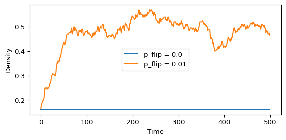

Once one simulator works, the interesting question is what changes when only the local rule changes. In this lab you keep the simulator fixed and vary the rule and the initial condition.
Core activity
Compare Rules 30, 90, 110 and 184 from a single seed and from a random row, and assign each to a Wolfram class (Wolfram Classes).
Prediction
Exercise
Before you run the code, use the rule tables to predict: which of the four rules conserve the number of occupied cells? Which rule gives a pattern that is symmetric about the seed?
Solution
Only Rule 184 conserves the number of 1s on a ring: each 1 either stays or moves one cell to the right into an empty cell. Only Rule 90 gives a symmetric pattern, because it equals its own reflection. The Validation section below checks the first claim. The chunk here checks both on a ring of 121 cells.
from amlab.cellular_automata.elementary import random_row, simulate_eca, single_seedfor rule in (30, 90, 110, 184): g = simulate_eca(random_row(121, 0.5, seed=7), rule, 80, boundary="periodic") s = simulate_eca(single_seed(121), rule, 40) conserved =bool((g.sum(axis=1) == g[0].sum()).all()) symmetric =bool((s == s[:, ::-1]).all())print(f"Rule {rule:3d}: conserves 1s {conserved}, symmetric {symmetric}")
Rule 184 moves each occupied cell one step to the right when the cell ahead is empty, so it conserves the number of 1s on a ring. Check it with the vectorized reference code, which uses periodic boundaries:
g184 = simulate_eca(random_row(121, 0.4, seed=7), 184, 80, boundary="periodic")print("Occupied cells over time (first 5 steps):", g184.sum(axis=1)[:5])print("Conserved on the whole run:", bool((g184.sum(axis=1) == g184[0].sum()).all()))
Occupied cells over time (first 5 steps): [48 48 48 48 48]
Conserved on the whole run: True
With the fixed-zero edges of apply_rule(), occupied cells leave at the right edge, so the count drops. That is a property of the boundary, not of the rule.
Optional extension: stochastic flips
You can add noise after each update. For example, flip each cell with a small probability p_flip.
That changes the model from a deterministic rule system into a stochastic one.
Exercise
Optional. Run Rule 184 on a ring of 200 cells from a random row with density 0.2, for 500 steps, with p_flip = 0 and with p_flip = 0.01. Plot the density of occupied cells over time. Use step_eca(state, 184, boundary="periodic") from amlab.cellular_automata.elementary in place of apply_rule(), so that the edges do not remove cells.
Solution
Without noise the density stays at its initial value, because Rule 184 conserves the 1s. With noise it drifts to about 1/2: a flip turns a 1 into a 0 at rate p_flip times the density and a 0 into a 1 at rate p_flip times one minus the density, and the two rates balance at density 1/2.
from amlab.cellular_automata.elementary import step_ecarng = np.random.default_rng(0)fig, ax = plt.subplots(figsize=(6, 3))for p_flip in (0.0, 0.01): state = random_row(200, 0.2, seed=1) density = []for t inrange(500): state = step_eca(state, 184, boundary="periodic") flips = rng.random(state.size) < p_flip state[flips] =1- state[flips] density.append(state.mean()) ax.plot(density, label=f"p_flip = {p_flip}")ax.set_xlabel("Time")ax.set_ylabel("Density")ax.legend()plt.tight_layout()plt.show()

Interpretation
Which rule preserves symmetry most clearly? Rule 90 is equal to its own reflection, so its diagram from a single seed is symmetric.
Which rule seems most sensitive to tiny changes in the first row? Measure it with the Hamming distance, as on Wolfram Classes.
Which rule looks most like transport or directed motion? Rule 184 is the simplest traffic model: it is the Nagel-Schreckenberg model with maximum speed 1 and no random braking (chowdhury2000statistical?).
Limitations
A few runs of one lattice size do not prove a class assignment. Try other seeds and sizes.
A random row with density \(1/2\) is only one choice. Rule 184, for example, behaves differently above and below density \(1/2\).
---title: "Rule Exploration"subtitle: "Module 6: Explorables and Discrete Models"format: html---Once one simulator works, the interesting question is what changes when only the local rule changes. In this lab you keep the simulator fixed and vary the rule and the initial condition.::: {.callout-important}## Core activityCompare Rules 30, 90, 110 and 184 from a single seed and from a random row, and assign each to a Wolfram class ([Wolfram Classes](wolfram-classes.qmd)).:::## Prediction::: {.callout-note}## ExerciseBefore you run the code, use the rule tables to predict: which of the four rules conserve the number of occupied cells? Which rule gives a pattern that is symmetric about the seed?:::::: {.callout-tip collapse="true"}## SolutionOnly Rule 184 conserves the number of 1s on a ring: each 1 either stays or moves one cell to the right into an empty cell. Only Rule 90 gives a symmetric pattern, because it equals its own reflection. The Validation section below checks the first claim. The chunk here checks both on a ring of 121 cells.```{python}from amlab.cellular_automata.elementary import random_row, simulate_eca, single_seedfor rule in (30, 90, 110, 184): g = simulate_eca(random_row(121, 0.5, seed=7), rule, 80, boundary="periodic") s = simulate_eca(single_seed(121), rule, 40) conserved =bool((g.sum(axis=1) == g[0].sum()).all()) symmetric =bool((s == s[:, ::-1]).all())print(f"Rule {rule:3d}: conserves 1s {conserved}, symmetric {symmetric}")```:::```{python}#| label: fig-ca-rule-grid#| fig-cap: 'Four elementary rules started from the same single-seed initial condition.'#| fig-width: 8#| fig-height: 8#| echo: falseimport numpy as npimport matplotlib.pyplot as pltfrom amlab.cellular_automata.cellular import apply_ruledef simulate_ca(initial_state, rule_number, steps): rule_bin = np.array([int(bit) for bit inf"{rule_number:08b}"]) grid = np.zeros((steps, len(initial_state)), dtype=int) grid[0] = initial_statefor t inrange(1, steps): grid[t] = apply_rule(grid[t -1], rule_bin)return gridrules = [30, 90, 110, 184]steps =80grid_size =121initial_state = np.zeros(grid_size, dtype=int)initial_state[grid_size //2] =1fig, axes = plt.subplots(2, 2, figsize=(8, 8), sharex=True, sharey=True)for ax, rule_number inzip(axes.flat, rules): grid = simulate_ca(initial_state, rule_number=rule_number, steps=steps) ax.imshow(grid, cmap="binary", interpolation="nearest", aspect="auto") ax.set_title(f"Rule {rule_number}") ax.set_xlabel("Cell index") ax.set_ylabel("Time")plt.tight_layout()plt.show()plt.close()```## Build a reusable simulatorThe core function should take three inputs: an initial row, a rule number, and the number of time steps.```pythondef simulate_ca(initial_state, rule_number, steps): rule_bin = np.array([int(bit) for bit inf"{rule_number:08b}"]) grid = np.zeros((steps, len(initial_state)), dtype=int) grid[0] = initial_statefor t inrange(1, steps): grid[t] = apply_rule(grid[t -1], rule_bin)return grid```With this wrapper in place, changing the experiment only means changing the inputs.## Compare several rulesRules `30`, `90`, `110`, and `184` are a good first comparison because they already show very different behavior.- Rule 90 creates a highly regular, symmetric pattern.- Rule 30 quickly becomes irregular and looks almost random.- Rule 110 shows localized structures and interacting motifs.- Rule 184 transports occupied sites to the right and is a useful bridge to traffic models.```pythonrules = [30, 90, 110, 184]for rule_number in rules: grid = simulate_ca(initial_state, rule_number, steps=80) plt.figure(figsize=(6, 4)) plt.imshow(grid, cmap="binary", interpolation="nearest", aspect="auto") plt.title(f"Rule {rule_number}") plt.xlabel("Cell index") plt.ylabel("Time") plt.show()```## Change the initial conditionThe second important experiment is to keep the rule fixed and change only the first row.```pythonrng = np.random.default_rng(7)initial_state = (rng.random(121) <0.5).astype(int)grid = simulate_ca(initial_state, rule_number=110, steps=80)plt.imshow(grid, cmap="binary", interpolation="nearest", aspect="auto")plt.show()```This lets you separate two effects:- what is imposed by the rule itself,- and what is inherited from the initial data.## ValidationRule 184 moves each occupied cell one step to the right when the cell ahead is empty, so it conserves the number of 1s on a ring. Check it with the vectorized reference code, which uses periodic boundaries:```{python}g184 = simulate_eca(random_row(121, 0.4, seed=7), 184, 80, boundary="periodic")print("Occupied cells over time (first 5 steps):", g184.sum(axis=1)[:5])print("Conserved on the whole run:", bool((g184.sum(axis=1) == g184[0].sum()).all()))```With the fixed-zero edges of `apply_rule()`, occupied cells leave at the right edge, so the count drops. That is a property of the boundary, not of the rule.## Optional extension: stochastic flipsYou can add noise after each update. For example, flip each cell with a small probability `p_flip`.```pythondef noisy_update(state, rule_bin, p_flip=0.01, rng=None):if rng isNone: rng = np.random.default_rng() new_state = apply_rule(state, rule_bin) flips = rng.random(len(new_state)) < p_flip new_state[flips] =1- new_state[flips]return new_state```That changes the model from a deterministic rule system into a stochastic one.::: {.callout-note}## ExerciseOptional. Run Rule 184 on a ring of 200 cells from a random row with density 0.2, for 500 steps, with `p_flip = 0` and with `p_flip = 0.01`. Plot the density of occupied cells over time. Use `step_eca(state, 184, boundary="periodic")` from `amlab.cellular_automata.elementary` in place of `apply_rule()`, so that the edges do not remove cells.:::::: {.callout-tip collapse="true"}## SolutionWithout noise the density stays at its initial value, because Rule 184 conserves the 1s. With noise it drifts to about 1/2: a flip turns a 1 into a 0 at rate `p_flip` times the density and a 0 into a 1 at rate `p_flip` times one minus the density, and the two rates balance at density 1/2.```{python}from amlab.cellular_automata.elementary import step_ecarng = np.random.default_rng(0)fig, ax = plt.subplots(figsize=(6, 3))for p_flip in (0.0, 0.01): state = random_row(200, 0.2, seed=1) density = []for t inrange(500): state = step_eca(state, 184, boundary="periodic") flips = rng.random(state.size) < p_flip state[flips] =1- state[flips] density.append(state.mean()) ax.plot(density, label=f"p_flip = {p_flip}")ax.set_xlabel("Time")ax.set_ylabel("Density")ax.legend()plt.tight_layout()plt.show()```:::## Interpretation- Which rule preserves symmetry most clearly? Rule 90 is equal to its own reflection, so its diagram from a single seed is symmetric.- Which rule seems most sensitive to tiny changes in the first row? Measure it with the Hamming distance, as on [Wolfram Classes](wolfram-classes.qmd).- Which rule looks most like transport or directed motion? Rule 184 is the simplest traffic model: it is the Nagel-Schreckenberg model with maximum speed 1 and no random braking [@chowdhury2000statistical].## Limitations- A few runs of one lattice size do not prove a class assignment. Try other seeds and sizes.- A random row with density $1/2$ is only one choice. Rule 184, for example, behaves differently above and below density $1/2$.## Next[Boundary Conditions](ca-boundary-conditions.qmd){.btn .btn-primary}